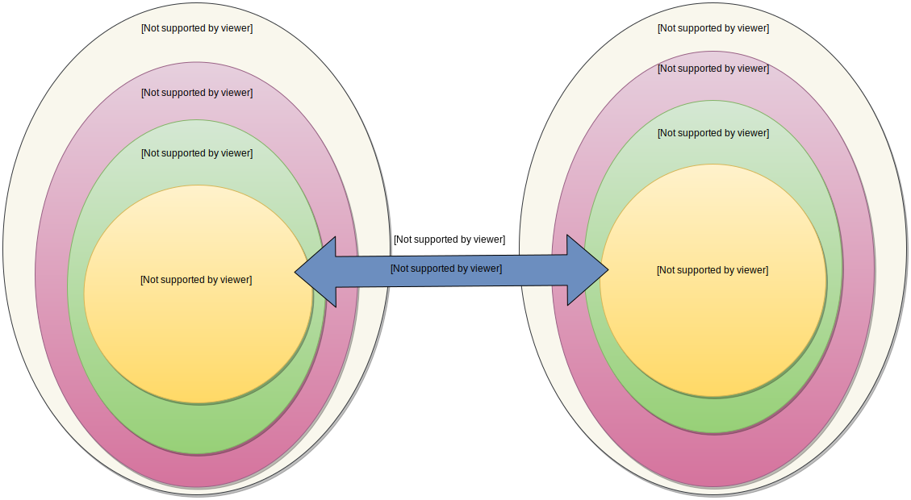

Documentación antigua 2¶
Introducción¶
Yuneta es una herramienta de desarrollo y operación de sistemas de información escalables y distribuidos, desplegados en un sistema o red de nodos Linux.
El mundo de Yuneta¶
Yuneta pertenece al mundo de Aplicación.
Yuneta es usuaria del mundo de Sistema Operativo y del mundo de Red.
El mundo de Sistema Operativo y Red son mundos de operación. Hay que dejar claro que Yuneta posee su propia operación, independiente del resto y con una formación específica.
{kind=link}
Herramienta de bajo nivel¶
Yuneta está escrita en C, lo que proporciona rápidez y tamaño mínimo. Su única dependencia es el sistema operativo Linux, de 32 o 64 bits. Eso le permite correr tanto en grandes máquinas como en pequeñas máquinas tipo RaspberryPI. Desarrollado con el IDE KDevelop de la distribución de Linux Kubuntu.
Herramienta de desarrollo rápido¶
Yuneta es un framework de desarrollo rápido, fuertemente inspirado en el diseño interno del lenguaje Python y el framework de desarrollo web Pyramid.
Herramienta legible¶
El origen de Yuneta es un libreria escrita en Python, heredando del lenguaje su filosofía de sencillez y legibilidad (Zen).
Herramienta en crecimiento¶
Yuneta busca nuevos y variados proyectos para crecer y fortalecerse con nuevas habilidades, con el objetivo de conseguir una herramienta todo terreno.
Yuneta se puede aplicar en cualquier campo donde existan comunicaciones e intercambio de mensajes, aportando escalabilidad, potencia y fiabilidad.
Yuneta ha nacido para jugar un papel importante en campos como:
Internet de las Cosas (IoT)
Blockchain
Machine Learning
Caracteristicas técnicas¶
Kernel en lenguaje C, para sistemas Linux de 32 o 64 bits.
Filosofía open-source, usando las prestigiosas librerías de código abierto:
CLI para operación avanzada en consola.
GUI para operación básica en navegador.
Conceptos básicos¶
Conceptos básicos sobre los que se asienta Yuneta:

nodo
reino
yuno
role
name
servicio
canal
CLI
GUI
{kind=link}
Nodo¶
El Nodo es el dispositivo, físico o virtual, donde se alojan los componentes de Yuneta: los reinos y sus yunos. Todo ello gestionado por el Agente del Nodo.
El nodo contiene el sistema operativo, única dependencia de Yuneta, y es la puerta a la red, por donde se establecen los canales que conectan a otro nodos o dispositivos exteriores.
El nodo afecta principalmente a Operación: por un lado, a Operación de Yuneta, y por otro lado, a Operación de Sistemas Operativos y Red. Deben existir procedimientos claros, fluidos y si es posible automátizados, entre estos dos mundos de Operación.
El tiempo de respuesta de Operación de S.O. y Red debe ser lo más corto posible ante requerimientos como solicitar un nuevo nodo o la existencia de un problema de conectividad de red.
El nodo, que normalmente estará distribuido en entornos de producción, preproducción, test, etc, afecta al presupuesto, porque tiene un coste dependiendo de sus características (memoria, cpus, disco, etc).
Se requiere, por tanto, que la red de nodos del sistema, con la topología elegida, esté bien dimensionada; por un lado, para no andar cortos de potencia, problema que afectaría al cliente final; por otro lado, para no ir muy sobrados de potencia y ser así un gasto excesivo.
Exiten varios tipos de nodos:
nodo master: Nodo gestor de un sistema de nodos.
nodo operacional. Nodo integrante de un sistema de nodos.
nodo fuente. Nodo con el código fuente y generador del componente binario del Yuno.
Reino¶
Reino es la agrupación lógica de yunos para poder administrarlos fácilmente.
Yuno¶
Yuno es la entidad definida con un rol (binario) y/o un nombre (configuración) que ofrece los servicios de tu negocio.
Rol¶
Los Yunos se diseñan con un Rol. El que quieras.
Nombre¶
Tus Yunos, además de tener obligatoriamente un rol , pueden tener un nombre o ser anónimos, lo que quieras.
Servicio¶
Servicio es la tarea dentro del yuno que ofrece un servicio público de negocio alimentado por .
Canal¶
Canal es la conexión entre los servicios de los yunos por donde circulan los .
CLI¶
GUI¶
Diseña tu sistema de información¶
Define los de tu negocio y diseña los servicios necesarios para distribuir y procesar los mensajes.
Crea tus servicios en yunos definidos por rol y nombre, organiza los yunos en reinos, y para conseguir potencia y fiabilidad, distribuye los reinos y yunos en multiples nodos, conectando los servicios mediante canales.
{kind=link}